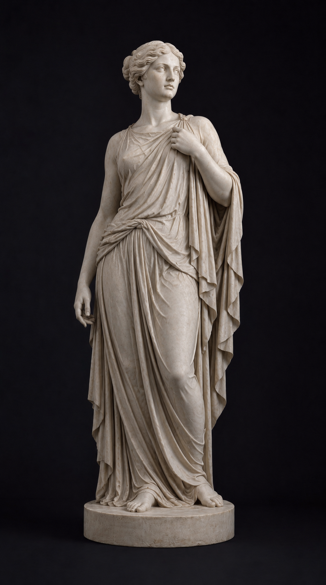

Первичная карта наблюдений
Карта сигналов тела
Выберите тему на карте: энергия, стресс, сон, пищеварение, гормоны, восстановление. В обучающем режиме можно посмотреть связи, а в самопроверке собрать мягкую первичную карту наблюдений перед консультацией.
Тело
Вид
Режим

Фон состояния
Шкалы самонаблюдения
Оцените общий фон за последние 2-4 недели. Это не диагноз, а способ увидеть, какие темы чаще всего требуют внимания.
Итог